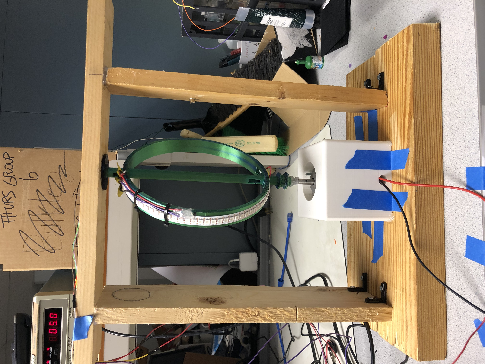
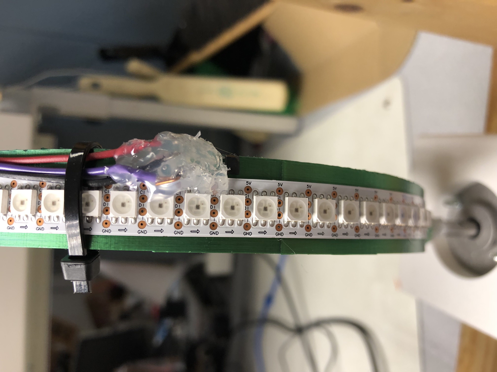
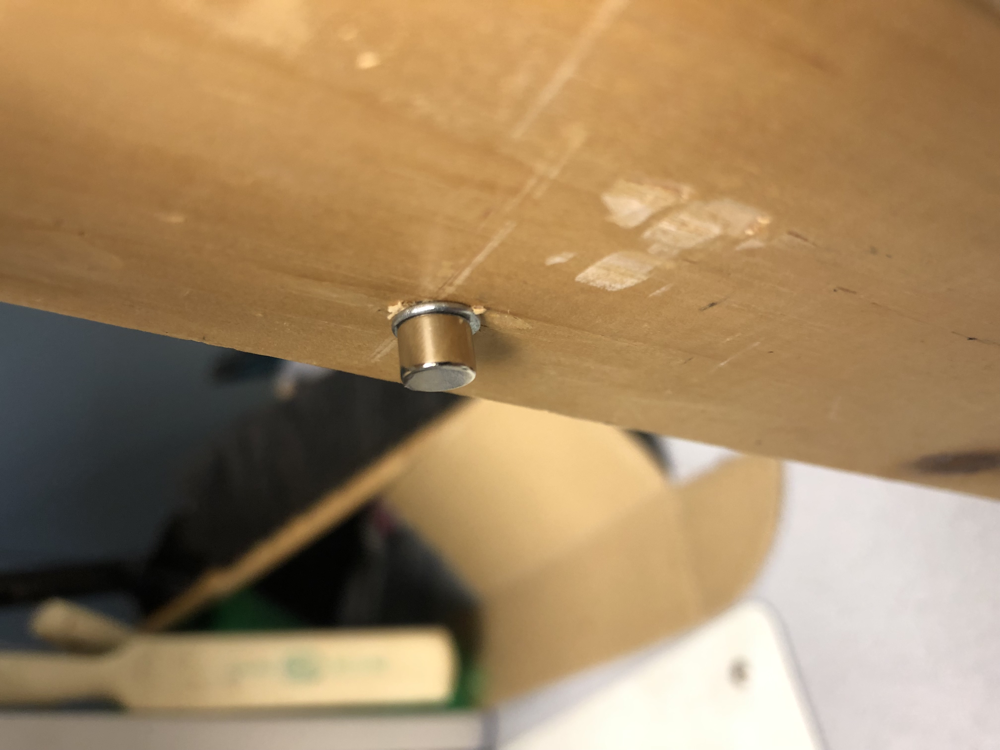
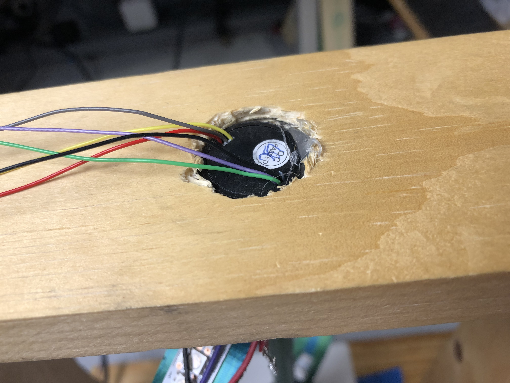
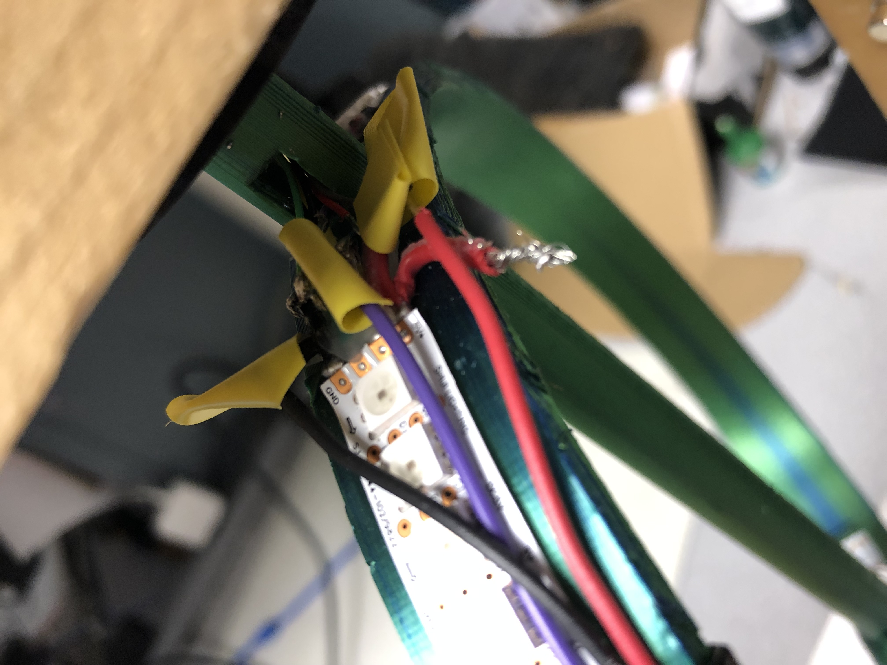

Mini Las Vegas Sphere
ECE 5725 Final Project
by Daniela Tran (dht35) and Anne Liu (ayl47)
Demonstration Video
Introduction
If you want to experience Las Vegas right in your own home then look no further because we have the perfect
solution for you. This project creates the mini Las Vegas sphere and it features some cool images that you might
see on the real sphere such as its infamous emoji and our home: the Earth. This light display will take you traveling
back to the city of lights. Using a persistence of vision illusion, this project uses a motor to spin a ring of
pulsing LEDs at a rate such that our eyes detect an illusion of an image from this movement.
Project Objective:
- Explore the persistence of persistence illusion with LED Lights.
- Implement still images onto a globe structure to emulate the Las Vegas Sphere shape.
- Implement a UI with the Raspberry Pi TFT touchscreen.
Design and Testing
To begin our journey, we first started our prototype
with a box fan as our base motor(kindly loaned to us by Professor Skovira) and a 28 Neopixel strip.
We found lots of 3D CAD designs online for a globe. These designs were able to be 3D printed, and so
after some further investigating, we were able to find a ring design that would be able to fit with
our box fan. This CAD model had a hollow core and the ring width was just wide enough to fit the width
of the neopixels. It also conveniently had wire holes at the top and bottom of the ring, which allowed
us to attach external wires, power supplies, and sensors later. We also made sure that the radius of
the hollowed axel would fit snugly onto a DC motor, just in case the box fan idea does not work out.
After the ring and motor shaft was finalized, we then layed out
the electrical components and the overall electrical system. This included the microcontrollers, sensors, and
power considerations for our system. We then reviewed this design and setup with our lab teaching assistance
and finalized the first draft of our Las Vegas Sphere as shown below.
After the overall picture was created, we then began assembling
all of the mechanical components of our Las Vegas Sphere. This began by building a wooden frame on top of our
box fan to create a more stable situation for the ring to spin on. This also gave us space to add the sensors
and created a mount for the Raspberry Pi.
3D Model of the LED Ring
Rough Draft of Schematic and Globe Setup
Wooden Frame to Support Our Spinning Ring On Top of Fan Motor Knob
Once we had the frames, we then proceeded to attach our ring onto the
fan motor by hot gluing it directly onto the knob. After this was setup, we tested our design by turning on the box
fan motor to see the results. We then noticed that the spinning of the motors caused everything to vibrate and shake
which then resulted in the globe created by the ring spinning to be shaking as well. Thus this then resulted in a shaky
globe or image. To further stabilize our system, we decided to build a wooden stool for the ring to lean on, in the sense
that we needed a better system other than hot glue to secure our ring, and we opted in for wooden planks and screws.
This created a secured ring that did not wobble and to finish our frame, we added a top piece of wood that was also screwed
on top of the slip ring to further stable our system. With this final attachment, we were completely satisfied with our
mechanical design and setup.
Moving onwards, we began implementing our electrical design.
This started with us researching more into Neopixels, specifically controlling them with a Raspberry Pi.
We chose to use Neopixel LEDs initially because these are a brand of individually addressable(programmable)
R(red)G(green)B(blue) LEDs. Each LED on the Neopixel LED strip can be individually controlled by communicating
with the tiny integrated circuit within the strip. This was essential for our needs as we could then set the
color and brightness of each LED pixel, independently of the others just by broadcasting different commands
through the Raspberry Pi(or any other Arduino microncontroller). The Neopixel strip we had purchased was from
Adafruit, which allowed us to use their CircuitBlinka and Neopixel libraries with the Raspberry Pi. This
allowed us to easily program and control each LED using their pre-made functions. We tested these LEDs
by running a simple for loop of turning each LED on in a loop and spun them with our box fan.
This simple test made us realize that there were several things
we needed to consider with our project that we had not thought of before. To start, our LEDs are attached in
a spherical shape, so every image we would want to capture on our display would have to be deformed to fit
this shape otherwise the image would appear to be “squished”. Since we are using a single LED strip but
separated by a distance of the diameter of our ring, this created a “front strip” and a “back strip” that
we would then need to program accordingly to capture the 3D picture. Another concern we had was in regards
to the box fan motor, which rotates at varying speeds which can cause problems in displaying a clear stable
image.
We began addressing these issues by starting with deforming our
input images to create a spherical image to display onto the globe. It turns out that many persistence of
vision projects had used a spherical display as it is very versatile to display multiple images in 360 degrees.
Thus with our research we were able to reference a sample code called genMatr.py that translated a normal
rectangle jpg or png into a spherical deformed image that had all of the pixels labeled and outputted a header
file that could be customized by the amount of LED pixels we had. Originally with the Neopixels, we had 28
LEDs in total, with 14 on each half of the ring and the resulting header file had a 1D array with all of the
pixel colors listed with headers to specify which image the header file is referring to. This array had a total
of 84 values with each triplet value representing the RGB value. This python script contains a deform sphere
method where it uses an angle calculation to produce the deformed image in pixel colors.
It also includes methods and functions to process the inputted
image file and gives the user freedom to choose any images found on the internet. With this file we were able
to create multiple images which helped speed up the process of deconstructing the image files. We then moved
onward to pulsing the LEDs. This then involved the hall effect sensor. The hall effect sensor code required variable
that could detect a change of state from the hall effect sensor detecting a magnet and not. The hall effect sensor
only output 1s or 0s and in this case the hall effect sensor was always high until it sensed a magner where it went low.
This meant we developed code that would detect a change of state in the hall effect sensor from 1 to 0 to sense that there
was a magnet. Whenever there was a magnet the code would keep track of the current time when it sensed the magner and fire off the LEDS.
At the same time it would use this current time to calculate the firing of the next few columns of the images and output those columns
onto the LED strip. Our code used a EWMA which is an exponential weighting moving average that we would use to smooth out the output
from the hall effect sensor and was used to calculate the firing time of the LEDs.
To choose which image to broadcast onto the Dotstars, we use UART
communication and pygame to display a controller so that the user can click on the image they would like to use.
The Raspberry Pi is constantly polling for touch screen inputs and will then send a string for each image.
This string represents unique image header files that can then be selected on the ESP32. The piTFT screen
also has a hard quit button (GPIO27) that will allow the user to quit immediate from the controller, displaying
the last broadcasted image indefinitely(until power supply is removed). The piTFT screen utilizes the skills
and knowledge we had learned from this course to incorporate pygame and a timer. We added a timer to help
escape this system in the beginning when there was lots to debug, as the UART communication was not yet secured.
Our communication protocol runs on a baud rate of 9600, which can be changed in the future if needed. We also
implemented USB connection for UART communication instead of GPIO pins to ensure better connection and prevent
the loss of data when gobe starts spinning. Having the Raspberry Pi only send strings not only produces a faster
reaction time of the ring, but it also helps prevent the loss of data transfer as the header files with all of
the pixels labeled are already on the ESP32. This also allowed us to control multiple images as the ESP32
has more storage space than the 16GB Raspberry Pi.
Below are the images we decided to use to display onto the globe
as seen on the piTFT menu page. Once the user pressed the image, the spinning globe would show the still image.
Unfortunately the camera could not really capture the image while the LED strip was still moving.
Mechanical Build and HardWare
After much trial and error we decided on a motor instead of the fan
motor for our project and build a wooden stand and 3D printed parts for the motor and the LED ring. Below is the
image of the stand.

Mechanical Stand
We hot glued the hall effect sensor onto the LED ring and attached a
stationary magnet onto the side of the wood by drilling a metal nail for the magnet to stick to.We also hot glued the LED strip
onto the LED ring.

Hall Effect Sensor

Magnet on Stand
After attaching the hall effect sensor, the magnet, and the LED lights onto the 3D
printed LED ring, we had to solder and connect all the electrical wires. Because the LED ring moved with the LED lights this would
cause the wires to get tangled up as we attached it to the stationary ESP32. Thus we had to get a slip ring and attach it onto the stand
and solder the LED strip and hall effect wires onto the different wires of the slip ring. To ensure that the globe was stable we had to drill
a large enough hole for the slip ring to fit through.

Slip Ring View from Top.

Soldering Job for the Slip Ring
After getting the wiring attached and the motor connected to the power supply, the mechanical stand
was ready for testing with our software.
Results and Conclusion
Fortunately, everything did go as planned, in the sense that we
were successful in displaying multiple images onto the globe and created a controller that switched between
photos at an immediate pace. Due to time constraints and our personal final schedules, we were not able to
display animations or gifs that we had mentioned before starting this project. We did test Neopixels and had
cool LED patterns running with the Raspberry Pi but because this was not our initial intentions, we then moved
onto creating more detailed images that spun at a more constant rate with the Dotstars and the ESP32
microcontroller. This ultimately helped achieved our vision of the Mini Las Vegas sphere as the images displayed
on the globe appeared to be crisp and had well defined curves/lines.
To conclude, this project really took us on a rollercoaster of
excitement, anxiety, and confusion. For both partners in this final project, neither of us had experience
with Dotstar LEDs and this class was our first chance in dealing with persistence of vision. Despite stepping
outside of our comfort zone in the beginning, we were able to overcome our roadblocks and setbacks, ultimately
creating a working prototype that displays images just like the LED sphere in Las Vegas, Nevada. Through this
process of testing and redesigning our prototype we learned that having an additional controlling pin, such
as the CLK(clock) pin on the Dotstar can really upgrade and increase the functionality of the project, in
the sense that the images became much more crisp and relayed our vision more accurately. We also learned that
common ground is extremely important when using different power sources as this can connect separate systems
into a whole.
Further Exploration
Our project definitely leaves room for improvement, as any image
is now able to be portrayed onto the globe. We did test our globe with multiple images and we found that most
images taken from the internet would work, however images with higher contrast like the Raspberry Pi logo
performed better than images with a lower contrast like the Moon or Death Star.
However with the genMatr.py file, the user can plug in any photo
and have it displayed onto the globe. Thus, in the future the Raspberry Pi can grab images from the web using
UDP communication and have the image data be transferred as a header file from the Raspberry Pi directly to the
ESP32, which would then broadcast the images appropriately onto the globe. The communication between the
Raspberry Pi and ESP32 would be much slower as the data transfer size is much larger, but this would still
allow the user to input any image in real time onto the globe. The main exploration would probably be surrounding
this communication bridge as well as the UDP communication protocols, as data loss in data transfer can be quite
delicate to work with, especially transfer larger bit sequences, such as the header file. Another hardware
improvement would be to solder together all of the connections to create a more permanent connection, thus
eliminating the random blinks from the LEDs as it spins, which would overall improve the user experience.
With these improvements made, further exploration could involve creating animations and rotating the images
on the globe, which we had thought of doing with multiple image frames in a loop and have the ESP32 grab
each image frame as time increases. This was not tested but theoretically would produce a rotating image
with some lag, further exploration can look into created a genMatrVideos.py file which would convert any
video into header files with all pixels colored.
Code Appendix
Code on the piTFT (finalmenu_Anne.py)
#Libraries Needed
import board
import neopixel
from time import sleep
import RPi.GPIO as GPIO
import time
import subprocess
import pygame,pigame
from pygame.locals import *
import sys
import os
import serial
######################### PiTFT Screen Setup Below ###########################
#Color Setup
WHITE = (255,255,255)
BLACK = (0, 0, 0)
#PiTFT Screen Initialization
os.putenv('SDL_VIDEODRV','fbcon')
os.putenv('SDL_FBDEV', '/dev/fb1')
os.putenv('SDL_MOUSEDRV','dummy')
os.putenv('SDL_MOUSEDEV','/dev/null')
os.putenv('DISPLAY','')
#intialize the pygame
pygame.init()
#connect pygame with the piTFT
pitft = pigame.PiTft()
#set the display to size of the piTFT
lcd = pygame.display.set_mode((320, 240))
lcd.fill((0,0,0))
#always need to update display after a change to have it show up
pygame.display.update()
size = width, height = 320, 240 #size of window
screen = pygame.display.set_mode(size) #display screen size
######################### PiTFT Screen Menu Setup Below ###########################
font_big = pygame.font.Font(None, 50) #set font size to be big
font_medium = pygame.font.Font(None, 35) #set font size to be medium
font_small = pygame.font.Font(None, 25) #set font size to be small
# set coordinates of where each image will be stationed
labels = {'Please Choose An Image' : (160, 25), 'Earth' : (40, 110), 'Soccer': (120, 110), 'Tennis' : (200, 110), 'Laugh' : (280, 110), 'Potato' : (40,210) , 'Cornell': (120, 210), 'Rpi' : (200,210), 'Alien' : (280,210)}
#Earth
earth = pygame.image.load("/home/pi/finalproj/menuimages/Earth.jpg").convert_alpha() #load the image and change scale
earth = pygame.transform.scale(earth, (40,40)) #further change the scale before getting the rectangle
earthrect = earth.get_rect()
#Soccer
soccer = pygame.image.load("/home/pi/finalproj/menuimages/Soccer.jpg").convert_alpha() #load the image and change scale
soccer = pygame.transform.scale(soccer, (40,40)) #further change the scale before getting the rectangle
soccerrect = soccer.get_rect()
#TennisBall
tennis = pygame.image.load("/home/pi/finalproj/menuimages/TennisBall.jpg").convert_alpha() #load the image and change scale
tennis = pygame.transform.scale(tennis, (40,40)) #further change the scale before getting the rectangle
tennisrect = tennis.get_rect()
#Laugh-Emoji
laugh = pygame.image.load("/home/pi/finalproj/menuimages/Laugh.jpg").convert_alpha() #load the image and change scale
laugh = pygame.transform.scale(laugh, (40,40)) #further change the scale before getting the rectangle
laughrect = laugh.get_rect()
#Moon
potato = pygame.image.load("/home/pi/finalproj/menuimages/Potato.jpg").convert_alpha() #load the image and change scale
potato = pygame.transform.scale(potato, (40,40)) #further change the scale before getting the rectangle
potatorect = potato.get_rect()
#Cornell
cornell = pygame.image.load("/home/pi/finalproj/menuimages/Cornell.jpg").convert_alpha() #load the image and change scale
cornell = pygame.transform.scale(cornell, (40,40)) #further change the scale before getting the rectangle
cornellrect = cornell.get_rect()
#Rpi
rpi = pygame.image.load("/home/pi/finalproj/menuimages/Rpi.png").convert_alpha() #load the image and change scale
rpi = pygame.transform.scale(rpi, (40,40)) #further change the scale before getting the rectangle
rpirect = rpi.get_rect()
#Toy
toy = pygame.image.load("/home/pi/finalproj/menuimages/Alien.jpg").convert_alpha() #load the image and change scale
toy = pygame.transform.scale(toy, (40,40)) #further change the scale before getting the rectangle
toyrect = toy.get_rect()
#update the screen
pygame.display.update()
######################### GPIO Pin/Button and Boolean Variables Setup Below ###########################
#bailout button
def GPIO27_callback(channel):
global code_run
code_run = False
GPIO.setwarnings(False) #disables warnings
GPIO.setmode(GPIO.BCM)
GPIO.setup(27, GPIO.IN, pull_up_down=GPIO.PUD_UP) #set quit button as an GPIO input
GPIO.add_event_detect(27, GPIO.FALLING, callback=GPIO27_callback, bouncetime = 300)
time_limit = 600 #timer limit
fps= 24 #frame rate of the screen
my_clock = pygame.time.Clock()
starttime = time.time()
code_run = True
#image boolean values
earthrun = False
soccerrun = False
tennisrun = False
laughrun = False
potatorun = False
cornellrun = False
rpirun = False
toyrun = False
################################### Main Loop Below ###################################
try:
while code_run:
#UART initialization
#/dev/ttyUSB0 the USB(top right) serial connection
ser = serial.Serial('/dev/ttyUSB0', 9600, timeout =1) #9600 baud rate of ESP32
ser.reset_input_buffer() #resets serial buffer, helps flushes out noise and previous messages
now = time.time() #keeps track of time
elapsed_time = now-starttime
if (elapsed_time > time_limit):
code_run = False
time.sleep(0.2)
pitft.update() #update the screen
for event in pygame.event.get(): #event polling
if(event.type is MOUSEBUTTONDOWN):
x,y = pygame.mouse.get_pos()
#print(x,y)
elif(event.type is MOUSEBUTTONUP):
x,y = pygame.mouse.get_pos()
if y > 50 and y < 90 and x > 20 and x < 60: #Earth image pressed
print("Earth")
earthrun = True
soccerrun = False
tennisrun = False
laughrun = False
potatorun = False
cornellrun = False
rpirun = False
toyrun = False
string = "earth" + "\n" #"\n" indicates line separation
string = string.encode('utf_8') #UART encoder, the default
ser.write(string) #sending to ESP32 via UART
line = ser.readline().decode('utf_8').rstrip() #strips recieved message
print("received: ", line)
elif y > 50 and y < 90 and x > 100 and x < 140:#Soccer ball image pressed
print("Soccer")
earthrun = False
soccerrun = True
tennisrun = False
laughrun = False
potatorun = False
cornellrun = False
rpirun = False
toyrun = False
string = "soccer" + "\n" #"\n" indicates line separation
string = string.encode('utf_8')#UART encoder, the default
ser.write(string) #sending to ESP32 via UART
line = ser.readline().decode('utf_8').rstrip() #strips recieved message
print("received: ", line)
elif y > 50 and y < 90 and x > 180 and x < 220: #Tennis Ball image pressed
print("Tennis Ball")
earthrun = False
soccerrun = False
tennisrun = True
laughrun = False
potatorun = False
cornellrun = False
rpirun = False
toyrun = False
string = "tennis ball" + "\n" #"\n" indicates line separation
string = string.encode('utf_8')#UART encoder, the default
ser.write(string) #sending to ESP32 via UART
line = ser.readline().decode('utf_8').rstrip() #strips recieved message
print("received: ", line)
elif y > 50 and y < 90 and x > 260 and x < 300: #Laughing emoji image pressed
print("Laughing")
earthrun = False
soccerrun = False
tennisrun = False
laughrun = True
potatorun = False
cornellrun = False
rpirun = False
toyrun = False
string = "laughing" + "\n" #"\n" indicates line separation
string = string.encode('utf_8')#UART encoder, the default
ser.write(string) #sending to ESP32 via UART
line = ser.readline().decode('utf_8').rstrip() #strips recieved message
print("received: ", line)
elif y > 150 and y < 190 and x > 20 and x < 60: #Mr.Potato Head image pressed
print("Potato")
earthrun = False
soccerrun = False
tennisrun = False
laughrun = False
potatorun = True
cornellrun = False
rpirun = False
toyrun = False
string = "potato" + "\n" #"\n" indicates line separation
string = string.encode('utf_8')#UART encoder, the default
ser.write(string) #sending to ESP32 via UART
line = ser.readline().decode('utf_8').rstrip() #strips recieved message
print("received: ", line)
elif y > 150 and y < 190 and x > 100 and x < 140: #Cornell Logo image pressed
print("Cornell")
earthrun = False
soccerrun = False
tennisrun = False
laughrun = False
potatorun = False
cornellrun = True
rpirun = False
toyrun = False
string = "cornell" + "\n" #"\n" indicates line separation
string = string.encode('utf_8')#UART encoder, the default
ser.write(string) #sending to ESP32 via UART
line = ser.readline().decode('utf_8').rstrip() #strips recieved message
print("received: ", line)
elif y > 150 and y < 190 and x > 180 and x < 220: #Rpi image pressed
print("Rpi")
earthrun = False
soccerrun = False
tennisrun = False
laughrun = False
potatorun = False
cornellrun = False
rpirun = True
toyrun = False
string = "rpi" + "\n" #"\n" indicates line separation
string = string.encode('utf_8')#UART encoder, the default
ser.write(string) #sending to ESP32 via UART
line = ser.readline().decode('utf_8').rstrip() #strips recieved message
print("received: ", line)
elif y > 150 and y < 190 and x > 260 and x < 300: #Alien image pressed
print("Alien")
earthrun = False
soccerrun = False
tennisrun = False
laughrun = False
potatorun = False
cornellrun = False
rpirun = False
toyrun = True
string = "toy" + "\n" #"\n" indicates line separation
string = string.encode('utf_8')#UART encoder, the default
ser.write(string) #sending to ESP32 via UART
line = ser.readline().decode('utf_8').rstrip() #strips recieved message
print("received: ", line)
#Combine picture surface with workspace surface
screen.blit(earth, (20,50)) #Earth
screen.blit(soccer,(100,50)) #soccer
screen.blit(tennis, (180,50)) #Tennis Ball
screen.blit(laugh, (260,50)) #Laughing Emoji
screen.blit(potato, (20,150)) #potato
screen.blit(cornell, (100,150)) #Death Star
screen.blit(rpi, (180,150)) #rpi
screen.blit(toy, (260,150)) #alien
for k,v in labels.items():
text_surface = font_small.render('%s'%k, True, WHITE)
rect = text_surface.get_rect(center=v)
lcd.blit(text_surface, rect) # need to combine the workspace
pygame.display.flip() #Display workspace on screen
except KeyboardInterrupt:
pass
finally:
del(pitft)
Code on the ESP32 (mercator.ino)
//Libraries needed
#include <Adafruit_DotStar.h>
#include <SPI.h>
// Include each of the images These are generated using genMatr.py.
#include "images/earth.h"
#include "images/soccer.h" // soccer ball
#include "images/tennisballmapping.h"
#include "images/laughing.h"
#include "images/potato.h" // pacman
#include "images/Cornell.h" // cornell logo
#include "images/Rpi.h" // rpi logo
#include "images/toy.h" // gutetama
//image struct
typedef struct _image_metadata {
uint8_t* data;
int columns;
int rows;
} image_metadata;
#define MAKEIMAGE(_name, _columns, _rows) (image_metadata){ data: (uint8_t*)&_name[0], columns: _columns, rows: _rows, } //image setup
#define NUM_IMAGES 8 //total current images
image_metadata images[NUM_IMAGES] = {
MAKEIMAGE(IMAGE_earth, IMAGE_COLUMNS_earth, IMAGE_ROWS_earth), // earth image
MAKEIMAGE(IMAGE_soccer, IMAGE_COLUMNS_soccer, IMAGE_ROWS_soccer), // soccer image
MAKEIMAGE(IMAGE_tennisballmapping, IMAGE_COLUMNS_tennisballmapping, IMAGE_ROWS_tennisballmapping), // tennis ball image
MAKEIMAGE(IMAGE_laughing, IMAGE_COLUMNS_laughing, IMAGE_ROWS_laughing), // laughing emoji image
MAKEIMAGE(IMAGE_potato, IMAGE_COLUMNS_potato, IMAGE_ROWS_potato), // Mr.Potato head image
MAKEIMAGE(IMAGE_Cornell, IMAGE_COLUMNS_Cornell, IMAGE_ROWS_Cornell), // Cornell logo image
MAKEIMAGE(IMAGE_Rpi, IMAGE_COLUMNS_Rpi, IMAGE_ROWS_Rpi), // Raspberry Pi logo image
MAKEIMAGE(IMAGE_toy, IMAGE_COLUMNS_toy, IMAGE_ROWS_toy) // Alien triplets image
};
// Number of LEDs in the entire strip
#define NUMPIXELS 72
// ESP32 Data pin for the DotStar strip
#define DATAPIN 14
// Clock pin for the DotStar strip
#define CLOCKPIN 32
Adafruit_DotStar strip(NUMPIXELS, DATAPIN, CLOCKPIN, DOTSTAR_BGR);
// Input pin for the Hall effect sensor
#define HALLPIN 15
// Initial LED strip brightness value
#define BRIGHTNESS 20
// Number of columns displayed in a single revolution
#define NUM_COLUMNS 72
// Time in microsecoonds after which a failed Hall effect detection turns off the LEDs
#define IDLE_TIME 1000000 // (1 sec)
// Alpha parameter for EWMA calculation of revolution time
#define ALPHA 0.5
// If defined, only show pattern on the front LED strip (rather than on both front and back)
#define FRONT_STRIP_ONLY
// If defined, flash red when the motor is spinning too fast to display all columns in one revolution
#define WARN_IF_TOO_FAST
// Static offset for shifting pixel display in X and Y dimensions
#define X_SHIFT 0
#define Y_SHIFT 0
// Y-offset in pixels for back strip versus front strip
#define BACK_OFFSET 3
// Time in microseconds to trigger next longitudinal shift in the image
#define ROTATE_INTERVAL 10000
// Initialization of the variables needed
int started = 0;
int cur_hall = 0;
int cur_step = 0;
int cur_x_offset = 0;
uint32_t last_hall_time = 0;
uint32_t last_rotate_time = 0;
uint32_t last_clock_time = 0;
uint32_t last_button_time = 0;
uint32_t cycle_time = 0;
uint32_t per_column_time = 0;
uint32_t next_column_time = 0;
int cur_image_index; // change index value with UART
image_metadata *cur_image = &images[cur_image_index]; //current image pointer
//******************************************************************************* Helper Functions Below **************************************************************************************//
// Set all pixels to the given color.
void setAll(uint32_t color) {
for (int i = 0; i < NUMPIXELS; i++) { //lloops through the entire LED strip length
strip.setPixelColor(i, color); // sets color of each pixel
}
strip.show(); // broadcasts pixel color
}
uint32_t get_color(int x, int y) { // gets Color from the image header file
if (x < 0 || x > cur_image->columns-1) return 0x0; // not within the dedicated columns, return no color
if (y < 0 || y > cur_image->rows-1) return 0x0; // not within dedicated row, return no color
int index = (y * cur_image->columns * 3) + (x * 3); // takes apart array in triplet sets representing RGB
uint8_t* p = (uint8_t*)&cur_image->data[index]; // pointer gets pixel value according to triplet sets
uint32_t* pv = (uint32_t*)p; // pointer to the array
uint32_t pixel = (*pv) & 0xffffff; // pixel value from pointer
return pixel;
}
void doPaint(uint32_t cur_time) { // paints and broadcasts LED colors
if (cur_time < next_column_time) { //ring not spinning
return; // exit function
}
int x = (cur_step - X_SHIFT + cur_x_offset) % NUM_COLUMNS; // x axis of our ring, based off of offsetted values which varies with motor
int frontx = x; //front strip labeled
int backx = (x + (NUM_COLUMNS/2)) % NUM_COLUMNS; // backstrip labeled and will start from the LED closest to the slip ring (LED[0])
// Front strip.
for (int i = 0; i < NUMPIXELS/2; i++) { //loops through half of the LED strip
int y = (NUMPIXELS/2) - i; // Swap y-axis of the front stip according to the array of colors from image header file
strip.setPixelColor(i, get_color(frontx, y)); // uses library to set each pixel the color of the image array/header file
}
// Back strip.
for (int i = NUMPIXELS/2; i < NUMPIXELS; i++) { //loops through half of the LED strip
int y = i - (NUMPIXELS/2) + BACK_OFFSET; // Swap y-axis of the back strip according to the array of colors from image header file
strip.setPixelColor(i, get_color(backx, y));
}
strip.show(); // displays the LED colors that are now done setting
cur_step++; //increases current step to allow new column of pixels to be read from image file
next_column_time = cur_time + per_column_time; // next column time updated accordingly (can be affected by motor speeds, hall effect sensor depends on motor speed)
}
//******************************************************************* SetUp and Main Loop Function Below **************************************************************************************//
void setup() {
Serial.begin(9600); //UART baud rate, can be changed but Rpi side would need to be changed to match this value
Serial.println("Initializing..."); // start up sequence
pinMode(LED_BUILTIN, OUTPUT); // LED GPIO pin setup for ESP32
pinMode(HALLPIN, INPUT_PULLUP); // hall effect sensor GPIO pin setup for ESP32
last_hall_time = micros(); // sets time in microseconds (10^-6)
next_column_time = micros(); // sets time in microseconds (10^-6)
strip.begin(); // final intialization of the LED strip
strip.show(); // shows the LED strip color(in this case always begins with LEDs all turned off, as no color was set previously
strip.setBrightness(BRIGHTNESS); // sets brightness of the LEDs to 20
}
void loop() { // constant loop
uint32_t cur_time = micros(); // current time in microseconds (10^-6)
int hall = digitalRead(HALLPIN); // the hall pin value initially
//UART BELOW
if(Serial.available() >0) //constant polling of the Serial terminal
{
String data = Serial.readStringUntil('\n');//reading entire line sent from the Rpi
Serial.print("You sent me: ");//retransmitting recevied message to notify the Rpi that message sent was successful
Serial.println(data); //retransmitting received message
if(data.equals("earth")) //different images sent from the Rpi --> default image is the Earth
{
cur_image_index = 0; //grab image from array of pre-made images
Serial.println("cur_image_index =" + cur_image_index); //prints our image index as a placeholder
}
if(data.equals("soccer")) //soccer ball image
{
cur_image_index = 1;
Serial.println("cur_image_index =" + cur_image_index);
}
if(data.equals("tennis ball")) // tennis ball image
{
cur_image_index = 2;
Serial.println("cur_image_index =" + cur_image_index);
}
if(data.equals("laughing")) // laughing emoji image
{
cur_image_index = 3;
Serial.println("cur_image_index =" + cur_image_index);
}
if(data.equals("potato")) // Mr.Potato head image
{
cur_image_index = 4;
Serial.println("cur_image_index =" + cur_image_index);
}
if(data.equals("cornell")) // Cornell logo image
{
cur_image_index = 5;
Serial.println("cur_image_index =" + cur_image_index);
}
if(data.equals("rpi")) // Rpi logo image
{
cur_image_index = 6;
Serial.println("cur_image_index =" + cur_image_index);
}
if(data.equals("toy")) // Alien Triplets from ToyStory image
{
cur_image_index = 7;
Serial.println("cur_image_index =" + cur_image_index);
}
cur_image = &images[cur_image_index]; // sets the newly updated image from UART to the current image to display on the ring
}
if (hall == LOW && cur_hall == 1) { // the transition from high to low of the hall effect sensor
if (cur_time - last_hall_time > 10000) { // Debounce.
cur_hall = 0; // current hall value is low
cur_step = 0; // Reset cycle of spinning
// Estimates timing of the braodcasting of the LEDs to take into account of the irregularities of the motor spinning by conditioning on the hall effect sensor values
cycle_time = (ALPHA * cycle_time) + ((1.0 - ALPHA) * (cur_time - last_hall_time)); //EWMA Calculation~:) uses a weighted estimate to generate a "accurate" prediction of cycle time
per_column_time = (cycle_time / NUM_COLUMNS); // uses predicted cycle time to estimate column time
next_column_time = cur_time - per_column_time; // uses predicted cycle time to estimate next column time
last_hall_time = cur_time;
#ifdef ROTATE_INTERVAL
if (cur_time - last_rotate_time > ROTATE_INTERVAL) {
last_rotate_time = cur_time;
}
#endif
}
} else if (hall == HIGH && cur_hall == 0) { // transition of 1 revolution
cur_hall = 1; // updates cur_hall to be high as hall's digital read is HIGH
#ifdef HALLDEBUG
setAll(0x0); // debug when hall effect not sensed, turns off all LEDs
#endif
}
#ifndef HALLDEBUG
if (cur_time - last_hall_time < IDLE_TIME) { //when the hall effect sensor is detected within 1 second, need to display image
doPaint(cur_time); // paints LEDs based on current time
} else {
setAll(0x0); // paints all LEDs to be off
}
#endif
}
Code to Generate Header Files
#!/usr/bin/env python
import argparse
import math
import sys
from PIL import Image
def spherical_deform(img, out_height=None):
# Idea here: We map rows from the source image onto rows in the destination
# image so that the visual depiction of the image on a spherical display
# will appear to be the same as if the display were planar.
#
# For a spherical display of 36 pixels in height, the real-world y-value
# of the pixel location is sin(theta) where theta is the latitude of the
# pixel. North pole has y-value of 1, equator of 0, and south pole of -1.
#
# For each row in the source image, we want to determine which pixel
# (== which angle theta) it should map onto in the destination image. The
# destination image is always 36 pixels high.
#
# For a source image y-value of y_s, the corresponding pixel latitude
# is theta = arcsin(y_s). For y_s = 1, theta = pi/2 or 90 degrees.
# For y_s = 0, theta = 0, and y_s = -1, theta = -pi/2.
#
# Therefore, we map each row of the source image onto the range (1, -1)
# where y_s = 1 is the top row, and y_s = -1 is the bottom row. We then
# calculate theta = arcsin(y_s) for each row of the source image, as above.
# We then calculate the corresponding pixel position as pixel_num = theta / 36
# (where theta ranges from pi/2 to -pi/2).
#
# Because a typical source image will have many more rows than we have pixels,
# we can perform resampling to assign a final color to each pixel.
(in_width, in_height) = img.size
out_height = out_height or in_height
out_width = (in_width / in_height) * out_height
# We start by scaling only in the y-dimension, then we scale in the x.
out_img = Image.new("RGB", (in_width, out_height))
in_pixels = img.load()
out_pixels = out_img.load()
# Map from 0 .. in_height -> 1 .. -1
slope = -2.0 / in_height
offset = 1.0
last_out_row = 0
for in_row in range(in_height):
in_row_scaled = slope * in_row + offset
theta = math.asin(in_row_scaled)
# pixel_num = (theta / out_height)
# Map from pi/2 .. -pi/2 -> 0 .. out_height
m = out_height / -math.pi
b = out_height / 2
target_row = math.floor((m * theta) + b)
if in_row == in_height - 1:
target_row = out_height - 1
# print(f"Row {in_row} -> {target_row}")
for out_row in range(last_out_row, target_row + 1):
for x in range(in_width):
out_pixels[x, out_row] = in_pixels[x, in_row]
last_out_row = target_row
return out_img
def process_image(
infile, outfile, name, width, height, outimage=False, spherical=False
):
img = Image.open(infile)
img = img.convert("RGB")
if spherical:
img = spherical_deform(img)
img = img.resize((width, height), resample=Image.NEAREST)
if outimage:
img.save(outfile)
print(f"Saved scaled image to {outfile}")
return
pixels = list(img.getdata())
with open(outfile, "w+") as outf:
outf.write(
f"// Generated by genheader.py --name {name} --width {width} "
f"--height {height} {infile} {outfile}\n"
)
outf.write(f"#define IMAGE_COLUMNS_{name} {width}\n")
outf.write(f"#define IMAGE_ROWS_{name} {height}\n")
outf.write(f"const static uint8_t IMAGE_{name}[] = {{\n")
for pixel in pixels:
r, g, b = pixel
outf.write(f"{b:#04x}, {g:#04x}, {r:#04x},\n")
outf.write("};\n")
print(f"Saved header to {outfile}")
def main():
parser = argparse.ArgumentParser()
parser.add_argument("--name", type=str, required=True)
parser.add_argument("--width", type=int, default=72)
parser.add_argument("--height", type=int, default=36)
parser.add_argument(
"--outimage",
action="store_true",
help="Write output as image, rather than header",
)
parser.add_argument(
"--spherical",
action="store_true",
help="Stretch image vertically to compensate for spherical projecton",
)
parser.add_argument("infile")
parser.add_argument("outfile")
args = parser.parse_args()
process_image(
args.infile,
args.outfile,
args.name,
args.width,
args.height,
args.outimage,
args.spherical,
)
if __name__ == "__main__":
main()
Link to Header Files for the Images and Final Project Repo
ECE 5725 Final Project Git Hub Repo